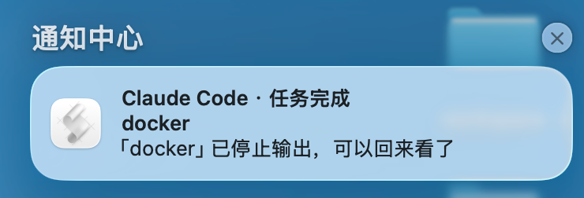
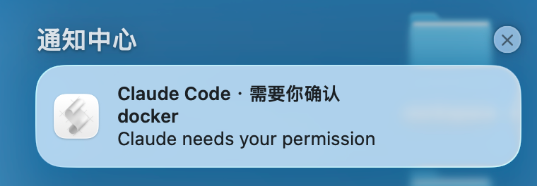

最近我发现一个现象：不少人已经在用 Claude Code 这类 agent 工具，但一碰到工具本身的问题，第一反应还是去浏览器搜教程。怎么配置、怎么写 hook、怎么接 MCP，搜到的答案还经常是过时的。
其实最该问的，就是工具自己。
这种“让 AI 自己解决自己的问题”的能力，我把它叫做“自举”——自己搞定自己。这篇文章，就是因为看到身边有一些人不知道还能这么用，才想写一写。
下面就拿一个具体例子展开：怎么让 Claude Code 给自己写一套任务通知。
先说痛点
我用 Claude Code 的典型姿势是：丢给它一个任务，然后切到其他桌面或应用处理别的事情，比如浏览器查资料，或者去回个消息。问题在于，我很难判断它现在的状态：
- 是还在干活？
- 是早就干完了？
- 还是卡在权限确认上，等我点“允许”？
前两种情况还好，第三种最为致命——它安安静静地卡在那里，我不切回来，它能卡到天荒地老。
所以我的需求很简单：任务完成，通知我；需要我确认，也通知我。 不管我当时在哪个窗口。
按以前的思路，我得去翻文档，查 Claude Code 支持哪些通知方式、配置写在哪个文件、字段叫什么。但这次我们可以换个做法：直接把需求丢给它自己。
把需求丢给它
我原话大概是这么说的：
现在你干完活，或者中途需要我确认的时候，我没法第一时间知道——要么已经干完了，要么卡在权限确认上等我。帮我解决一下：任务完成时给我发桌面通知，需要我确认时也发通知，不管我当时在哪个窗口。实现方式你定，hooks 或者别的都行。
注意最后半句，我其实只知道“可以通过 hooks 实现”，具体怎么配并不清楚。但这不重要——它清楚就行。
它去看了我的 ~/.claude/settings.json，发现我已经挂了一堆 hooks，于是没有覆盖，而是在 Stop 和 Notification 两个事件上各追加了一条。然后写了个小脚本，还造了一条假的通知事件把脚本实际跑了一遍，最后检查了配置文件格式没被改坏。
整个过程我只提供了需求，没有查任何文档。
原理：hooks 是 Claude Code 的事件回调
Claude Code 的 hooks，本质就是在特定生命周期事件发生时，执行你指定的命令。事件很多，这次只用到两个：
| 事件 | 触发时机 | 这次用来做什么 |
|---|---|---|
Stop |
主 agent 结束一轮回复时 | 通知你“活干完了” |
Notification |
需要权限确认、等待你输入等 | 通知你“该你上场了” |
hook 的输入会通过 stdin 以 JSON 传进来，里面有当前工作目录、通知消息等字段，脚本里按需取用即可。
动手：一个脚本 + 两行配置
通知脚本放在 ~/.claude/hooks/notify.sh，macOS 下用 osascript 发系统通知：
1 |
|
然后让它把配置追加到 ~/.claude/settings.json（注意是追加，不是覆盖）：
1 | { |
几个细节值得说一句：
async: true让 hook 在后台跑，不会拖慢会话；- 命令走 shell，
~可以正常展开，用绝对路径当然更稳； - 如果你已经有其他 hooks，记得合并到同一个事件的
hooks数组里，而不是整个替换。
效果
配置完之后，不管我在浏览器、微信还是 IDE，任务一结束就能看到：

需要我点确认的时候也一样：

备注：通知里出现的「docker」不是 Docker，而是我当前项目目录的名字（目录恰好叫
docker）。脚本取 hook 输入里cwd的 basename 作为副标题，用来区分通知来自哪个项目。
几个坑
- macOS 通知会显示成 Script Editor。 因为是通过
osascript发的。如果没看到通知，去“系统设置 → 通知”里把 Script Editor 允许，再检查下勿扰/专注模式。 Stop是每轮回复都触发。 包括你问一句它答一句的场景。嫌吵可以删掉sound name "Glass"静音，或者干脆去掉Stop那条 hook，只保留需要确认时的提醒。- 想要手机推送。 settings 里还有
inputNeededNotifEnabled和agentPushNotifEnabled两个开关，配合 Remote Control 可以把提醒推到手机。
说明一下术语
严格来说，这里叫“自举”是一种比喻。自举（bootstrapping）原指编译器自己编译自己，强调用自身的能力把自己抬起来；而我做的这件事，更准确的说法是 agent 的自我扩展（self-extension）——让它给自己写 hook、加技能、改配置。换句话说，改的是它的 harness（配置、hooks、skills 这些外围设施），不是模型本身。
所以标题我还是保留“自举”，因为它更形象；但如果要严谨一点，说“自我扩展”更合适。
最后
这件事本身很小，但它体现了一种使用 AI 的方式：你只需要知道“它能做什么”，具体怎么做，交给它。
我不知道 hooks 的字段怎么拼，不知道 settings 该合并还是覆盖，不知道 osascript 的参数怎么转义——这些它都知道。我要做的，只是把需求描述清楚，然后 review 一下它改了什么。
这就是我理解的“自举”：不是让 AI 替你思考，而是把你从“查文档、拼配置、试错”这类体力活里解放出来。你和 AI 之间的分工，应该更接近“你提需求，它实现”，而不是“你查教程，再指挥它实现”。
下次再遇到工具本身不好用的问题，不妨先问它一句：你自己能不能改？
希望此文能对你有所启发。
延伸阅读
- Claude Code Hooks 文档：https://docs.claude.com/en/docs/claude-code/hooks
- Claude Code Settings 文档：https://docs.claude.com/en/docs/claude-code/settings
- macOS
osascript手册：https://ss64.com/mac/osascript.html - 本文永久地址：https://jianghushinian.cn/2026/11/01/claude-code-self-bootstrap/
联系我
- 公众号：Go编程世界
- 微信：jianghushinian
- 邮箱：jianghushinian007@outlook.com
- 博客：https://jianghushinian.cn
- GitHub：https://github.com/jianghushinian